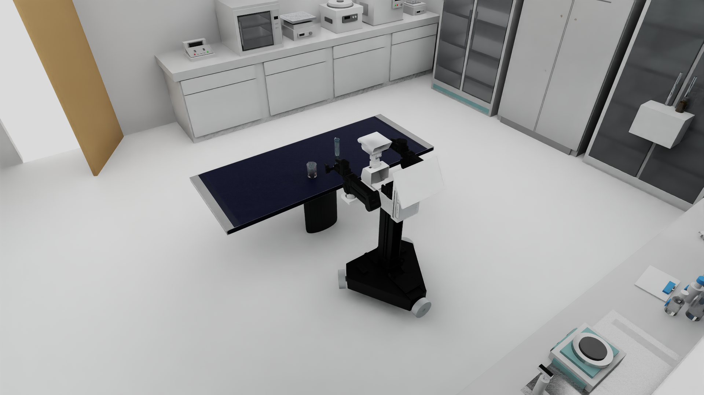

眼睛看到的是对的
透明筒壁、刻度、底座都正常，尺寸也没有错。它不该因为物理问题被替换或改粗。
视觉模型只负责“像不像量筒”；液体碰撞模型负责“能不能把粒子留在里面”。原资产是适合渲染的开边薄壳，直接交给 GPU 做凸分解时，内腔无法得到稳定表达。
透明筒壁、刻度、底座都正常，尺寸也没有错。它不该因为物理问题被替换或改粗。
薄面、开口边和不稳定的分解结果，会让粒子穿壁、从底部漏出，甚至触发 GPU cooking 错误。
simulationPoints 是写入的初值；真正判断是否漏液必须读运行中的 points。
points 后，旧量筒三次只留下 43–45 / 548 粒。问题不是“液体颜色太淡”，而是碰撞容器根本没有成立。这只量筒经历了两条失败路线、一次证据纠错，最后才回到 0812 已验证的容器拓扑。把过程保留下来很重要：它告诉我们何时应继续查参数，何时必须停止调参并重做几何。
闭合只说明网格没有洞；GPU 可烹饪说明 PhysX 能把它变成 GPU 可处理的碰撞组成；能装液还要靠运行时实时粒子验证。三者不能互相代替。
原量筒的问题来自“高而薄、开边、视觉面片密集”的拓扑。0812 烧杯能工作，是因为它使用了简单、封闭、明确保留内腔的专用碰撞拓扑。
网格适合透明渲染，却有大量开口边。GPU 凸分解无法稳定得到既有筒壁、又保留内腔的碰撞结构。
结论：这是几何前提不成立，不应先调 rest offset。分区越密，GPU cooking 与接触计算越不稳定。关闭这些分区的负对照反而连续通过 5 次更新。
结论：更多分片不等于更好的 GPU 容器。网格成为 closed manifold，中央杯口也保留了，但仍无法成为合格的 GPU-PBD 容器。静态保液率只有 10.58%。
结论：拓扑闭合是必要条件，却不是充分条件。simulationPoints 只是写入的初值，不能证明粒子还在杯中。改读运行中的 points 后，旧“通过”结论被撤销。
视觉 mesh 完全不动，只增加一个隐藏闭合碰撞 mesh：内腔半径 16.5 mm、底面 16 mm、杯口高度 278.24 mm。
实时 points：至少 546 / 548；87–88 FPS。它的液体碰撞层本来就是低复杂度、封闭、带明确内腔的专用网格。GPU 看到的是一只“物理杯子”，而不是透明视觉表皮。
量筒又高又窄，视觉模型是开边薄壳；直接凸分解容易封住杯口、丢失内腔或退化为不稳定的碰撞组成。
我们没有拿圆柱体粗暴套住量筒，也没有修改原始视觉 mesh。ConvertAsset 参考已经跑通的 LabUtopia 0812 容器拓扑，把模板按量筒的实测半径和高度变形，生成一个source-derived、封闭、可三角化的隐藏碰撞网格。
Interactive cutaway
关闭一层不会改变仿真，只帮助你理解：好看的玻璃和可靠的液体碰撞，本来就应该各司其职。
convexDecomposition 会把它烹饪为若干可由 GPU 处理的凸组成部分，从而共同表达杯壁和中空内腔。若直接把整个量筒做成单一 convex hull，杯口会被封住，液体反而进不去也倒不出。最终方案沿用 0812 已验证的轻量液体参数，只把外观调成更易观察的蓝色。真正解决“刚抬量筒就冒出一坨液体”的关键，是先让量筒在 755 mm 桌面上自然落稳，再把预沉降粒子保存到量筒的局部坐标中。
不增加体积光、不增加额外灯光，也不靠高成本材质掩盖粒子。颜色只影响看见什么，不影响碰撞。

这条边界让修复可以复用，也防止任务包里悄悄出现量筒专用补丁。
生成隐藏碰撞壳，做 GPU cooking、三次冷启动、静态保液和规定轨迹倒液资格验证。
消费合格 package/manifest，把房间、桌子、机器人、容器和粒子放进同一个自包含场景。
规划双臂动作，记录真实接触、粒子归属和视频；不回头修改 GenManip 或资产物理。
早期快速抬升让量筒在闭合夹爪里滑了约 101.7 mm。液体本身没有先坏，是容器从机器人预期的抓取位姿中滑走了。最终修复没有再动碰撞或液体参数，而是把 100 mm 抬升拉长到 2 秒。
GPU cooking 成功，三次冷启动读取实时 points，静止量筒能稳定保液。
容器与预沉降粒子使用同一个局部坐标变换；加载后没有外部液团或初始爆散。
证明：任务初态成立夹爪真实接触，慢抬、对口、倾倒与放回；不直接写容器位姿，也不靠隐藏传送。
证明：这条 scripted oracle 成立| 正式冷启动 | 进入烧杯 | 留在量筒 | 洒出 | 对口误差 | 结果 |
|---|---|---|---|---|---|
| Run 01 | 570 / 580 | 10 | 0 | 0.325 mm | PASS |
| Run 02 | 560 / 580 | 20 | 0 | 0.327 mm | PASS |
| Run 03 | 569 / 580 | 11 | 0 | 0.329 mm | PASS |
不要复制量筒的固定尺寸；复制的是工作方法：先拓扑、再静态保液、再规定轨迹、再打包、最后跑机器人。
边界边、非流形边、薄面与凸分解结果。
重做简洁封闭拓扑；不要先调 offset。
读取实时 points；检查初始穿插与 self-collision。
先修证据与初态，再判断是否需要改几何。
容器支撑姿态、粒子局部坐标和共同场景变换。
修统一坐标映射；不要分别给容器和液体加高度补偿。
抓取高度、夹爪接触、抬升速度和控制轨迹。
进入机器人控制线；不要回头改已通过的容器碰撞体。
points 完成三次冷启动。显式传入已经 promotion 的 ConvertAsset package；生成器会 fail closed，不接受缺少动态装液证据的旧包。
PYTHONPATH=src python \ scripts/generate_scientific_workbench_task02_r8.py \ --r7-package outputs/<r7-task02-package> \ --transfer-package ../ConvertAsset/outputs/<promoted-r8.7-package> \ --out outputs/scientific_workbench_task02_r87
convexDecomposition；碰撞 contact offset 5 mm；碰撞 rest offset 3 mm；minimum thickness 1 mm；voxel resolution 500000；液体 580 粒；粒子宽度 5.94 mm；粒子 contact offset 5 mm；粒子 rest offset 0。它们是本资产的验证结果，不是所有容器的通用常数。simulationPoints 冒充实时保液结果。